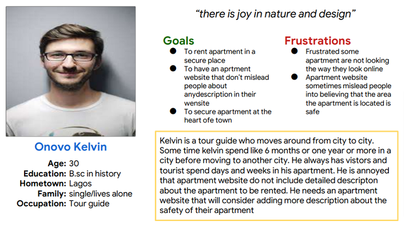
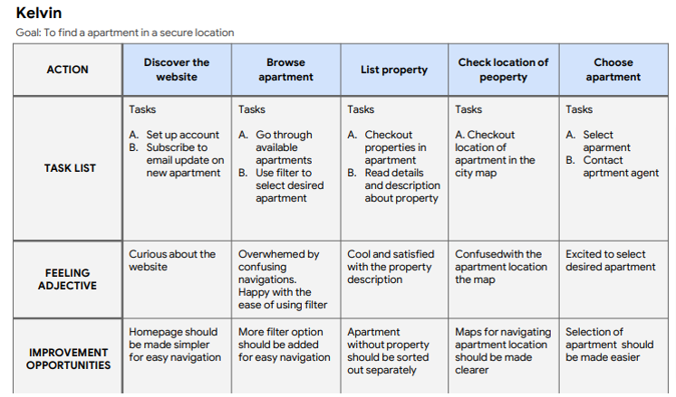
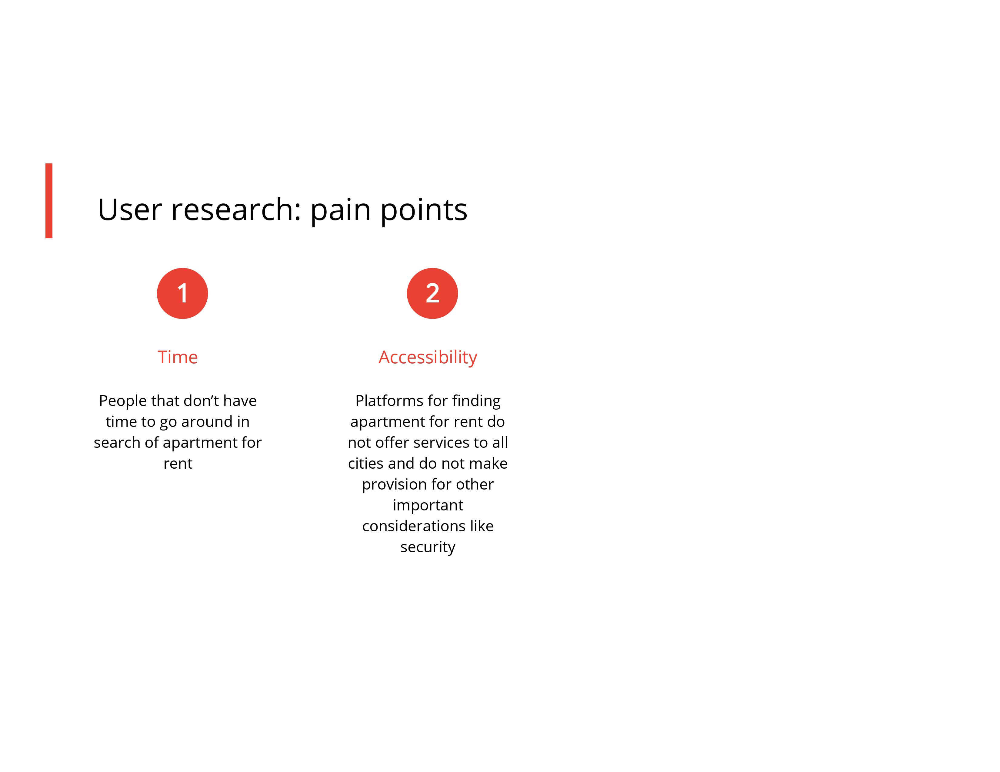
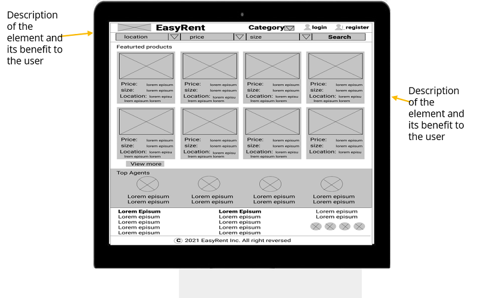
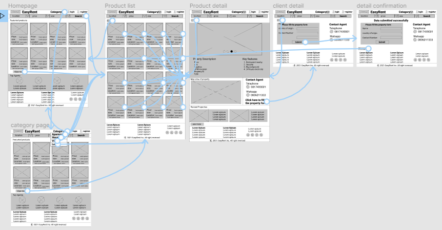
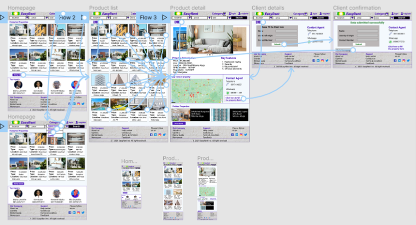
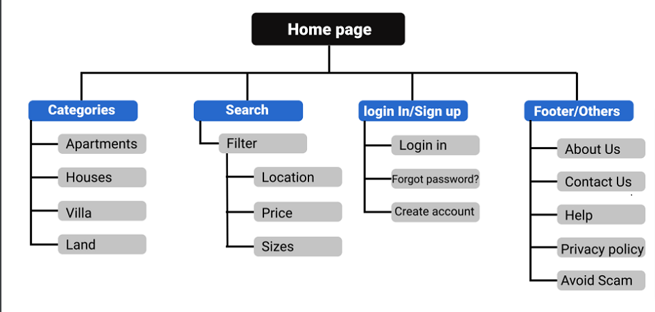
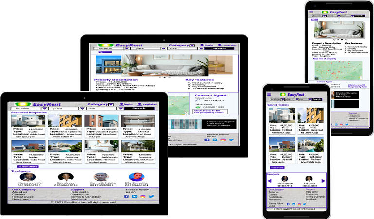

Title: A website that help people find apartment for rent
Project overview
EasyRent is an online meduim for finding apartment for rent in major cities in Nigeria. It is located in Nigeria and offer reliable, efficient and outstanding service to its customers. Easyrent target people like tourists and contractors that ususally change cities and need temporary or permanent accommodation.
Project duration
15th August to 25th August 2021
The problem
Tourist, contractors and travellers who are looking for temporary or permament apartment to rent
The goal
Design a website to help people find aprtment for rent
User research: summary
I conducted some interviews and came up with an empathy map that show the desire and need of the users, I am designing the website for. I also discovered from the research I carried out that the primary users of the website are tourist, contractors and people that frequently change cities and are in need of temporary or permanent accommodation for rent. I also discovered from the research that the need to secure accommodation in a place that has constant power supply, security and other basic amenities lead users to patronize platform that offers such services
User research: pain points
Time
People that don’t have time to go around in search of apartment for rent
Accessibility
Platforms for finding apartment for rent do not offer services to all cities and do not make provision for other important considerations like security
persona
Problem statement
Kelvin is a Tour guide who needs a secure and high standard apartment because he wants his visitors to feel secure and get the best hospitality
persona image
User journey map
Mapping Kelvin user journey showed how easy and simple it will be finding apartment for rent
user journey image
Paper wireframe
drafted different paper wireframes before arriving at the final one that made it to the initial digital wireframe and it helped in producing a wireframe that addresses user pain point
paper wireframe image
Digital wireframes
As I was drafting out the initial digital wireframe, I based my screen designs on finding from user research
Digital wireframe image
Low fidelity prototype image
Usability study: findings
This were the main finding uncovered by the usability study
Services
Users want to be able to contact an agent for more clearification
Accessibility
Users want to be able to view the location of apartment on a map
Mockups
Based on insight from usability studies, I applied design changes and provided a clear map for viewing the location of the apartment
High-fidelity prototype
The final high fidelity prototype shows a simple and clear flow for finding apartment for rent. It can be viewed at
herehigh-fidelity prototyp image
Sitemap
I used EasyRent sitemap as an instruction in designing the website in order to maintain consistency across devices.
sitemap image
Mockups
Accessibility considerations
- Used understandable images to enable users have a clear view of the services
- Provided some search options to enable users easily find what they are looking for
Takeaways
Impact
The website knows exactly the need of its users
What I learned
I learnt while designing the website that there is need for an agent that users can contact
Next Steps
There should be continuous iteration to ensure that immediate user needs are addressed
Usability study should be conducted from time to time, to address users pain point